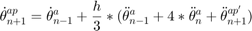

Random Walk, Angle of the Rocket Simulation
So this has to use a monte carlo based predictor-corrector method control System simulation in order to check the algorithm. The random parameters Should be moment of inertia, damping, spring constants and initial and continous disturbance. The only constantly randomly changing variable is the continous disturbance. The rest change constantly with the same variable which is chosen randomly. The predictor-corrector algorithm is to keep the path as close to vertical as possible.
The variables are defined as:
Step Size
Iteration number
Angle of the rocket
Angle of the rocket used for integration
Angular velocity of the rocket
Angular Velocity used for integration
Angular Acceleration of the rocket
Moment of Inertia of the rocket
Moment created due to motor casing angle
Moment created due to disturbances
Damping Coefficient
Spring Coefficient
Variables that are used in control algorithm
First Prediction in Molines Method
 Improved Prediction
Improved Prediction
Contents
- Initialize
- No control system implemented values
- These Values are to be used for the control algorith only...............
- Changes over time
- Angular Acceleration
- Angular Velocity
- Angle of the rocket
- Compare with no control system
- Control Algorithm
- Predictor-Corrector Miline's Method
- Moment Created due to Nozzle
- Plotting
- Saving for graphical simulation
Initialize
Some variables are randomized some are all zeros.
clc;clear; nrocket = 1; % Number of rockets to be simulated at a time end_time = 12; % In seconds step_size = 0.01; % Simulation Step size endtime = end_time/step_size; % Have to check what realistic values actually are here, These are ... % randomized disturbance = zeros([nrocket nrocket 3]);%normrnd(5,10,[nrocket nrocket 3]); % Force the step disturbance that the ... % rocket has on it change to randn moment_inertia = abs(normrnd(21,5,[nrocket nrocket])); % Kg m^2 delta_spring = abs(normrnd(0.1,0.0025,[nrocket nrocket])); % N m/rad delta_damping = abs(normrnd(5.8,1,[nrocket nrocket]));%abs(normrnd(2,1,[nrocket nrocket])); %{abs(normrnd(.00005,.00005,[nrocket nrocket])); % N m/rad^s delta_inertia = abs(normrnd(0.0003,0.000015,[nrocket nrocket])); % KG m^2 % These values start at zero due to zero initial velocity, once the ... % rocket starts they increase by previously generated random delta % values. damping = zeros(nrocket); spring = zeros(nrocket); thrust = 1000; % Newtons angle_motor = zeros([nrocket nrocket 3]); time = zeros([nrocket nrocket 3]); moment = zeros([nrocket nrocket 3]); % Moment created by the control system velocity_actuator = 0.1; % m/s how fat the actuator moves actuator_distance = 0.6096; % Distance of actuators to the pivot position center_mass = 1; % Center of mass away from the bottom of the rocket angular_acceleration = zeros([nrocket nrocket 3]); % rad/s^2 angular_int_velocity = zeros([nrocket nrocket 3]); angular_velocity = zeros([nrocket nrocket 3]); % rad/s angle_int_rocket = zeros([nrocket nrocket 3]); angle_rocket = zeros([nrocket nrocket 3]); % In radians
No control system implemented values
no_angular_acceleration = zeros([nrocket nrocket 3]); % rad/s^2 no_angular_int_velocity = zeros([nrocket nrocket 3]); no_angular_velocity = zeros([nrocket nrocket 3]); % rad/s no_angle_int_rocket = zeros([nrocket nrocket 3]); no_angle_rocket = zeros([nrocket nrocket 3]); % In radians
These Values are to be used for the control algorith only...............
........................................................................
desired_angle = zeros(nrocket); % Desired angle of motor casing in radians desired_rocket = zeros(nrocket); % Desired angle of the rocket % Moline's Predictor-Corrector Method is going to be used predicted_velocity1 = zeros(nrocket); predicted_derivitive = zeros(nrocket); predicted_velocity = zeros(nrocket); angle = zeros(nrocket); % Not all might end up being used velocity = zeros(nrocket); velocity1 = zeros(nrocket); velocity2 = zeros(nrocket); velocity3 = zeros(nrocket); velocity4 = zeros(nrocket); % Not all might end up being used derivitive3 = zeros(nrocket); derivitive2 = zeros(nrocket); derivitive1 = zeros(nrocket); derivitive = zeros(nrocket); for n = 3:endtime+3
Changes over time
The moment of inertia decreases over time due to fuel spent. Damping and spring coefficients increase over time since the rockets velocity increases over time.
% Start of rocket behaviour........................................... % These variables change every second Randomly determined by how ... % much earlier damping = step_size*delta_damping + damping; spring = step_size*delta_spring + spring; moment_inertia = moment_inertia - delta_inertia*step_size; time(:,:,n) = time(:,:,n-1) + step_size; y = normrnd(0,1,[nrocket nrocket]); disturbance(:,:,n) = disturbance(:,:,n-1); B = (y>0); disturbance(:,:,n) = B.*normrnd(0,.05,[nrocket nrocket])+disturbance(:,:,n-1); % Randomize the ... % disturbance a lil throuought the simulation
Angular Acceleration
angular_acceleration(:,:,n) = (moment(:,:,n-1) + disturbance(:,:,n) - ... (angular_velocity(:,:,n-1).*damping) - ... (angle_rocket(:,:,n-1).*spring))./moment_inertia;
Angular Velocity

Numerical integration using Trapezoidal method. Used to possibly compare with what is used in predictor-corrector algorithm. It symbolizez what the gyroscope readings are.
angular_velocity(:,:,n) = angular_acceleration(:,:,n)*step_size/2 ... + angular_int_velocity(:,:,n-1); angular_int_velocity(:,:,n) = ... angular_acceleration(:,:,n)*step_size... + angular_int_velocity(:,:,n-1);
Angle of the rocket
Numerical integration using Trapezoidal Method. Used to possibly compare with what is used in predictor-corrector algorithm
angle_rocket(:,:,n) = angular_velocity(:,:,n)*step_size/2 ... + angle_int_rocket(:,:,n-1); angle_int_rocket(:,:,n) = angular_velocity(:,:,n)*step_size ... + angle_int_rocket(:,:,n-1); % End of behaviour of rocket.......................................... % ....................................................................
Compare with no control system
The same equations are used except ignoring the moment term therefore I will not comment this
no_angular_acceleration(:,:,n) = (disturbance(:,:,n) - ... (no_angular_velocity(:,:,n-1).*damping) - ... (no_angle_rocket(:,:,n-1).*spring))./moment_inertia; no_angular_velocity(:,:,n) = no_angular_acceleration(:,:,n)*step_size/2 ... + no_angular_int_velocity(:,:,n-1); no_angular_int_velocity(:,:,n) = ... no_angular_acceleration(:,:,n)*step_size... + no_angular_int_velocity(:,:,n-1); no_angle_rocket(:,:,n) = no_angular_velocity(:,:,n)*step_size/2 ... + no_angle_int_rocket(:,:,n-1); no_angle_int_rocket(:,:,n) = no_angular_velocity(:,:,n)*step_size ... + no_angle_int_rocket(:,:,n-1);
Control Algorithm
Insert control algorithm here it is to be as close to what to put into raspberry pi as possible AKA dont use values used before, except the angular velocity since that is what gyroscope is reading
% Some might not be used at all velocity4 = velocity3; velocity3 = velocity2; velocity2 = velocity1; velocity1 = velocity; velocity = angular_velocity(:,:,n); % What the gyroscope would spit out angle = angle + velocity*step_size; % Current angle of the rocket % Some might not be used at all derivitive3 = derivitive2; derivitive2 = derivitive1; derivitive1 = derivitive; derivitive = (velocity - velocity1)/(2*step_size); % Angular ... % Acceleration of the rocket
Predictor-Corrector Miline's Method
Page 404 in "Computer Methods for Engineers with Matlab Applications" by Yogesh Jaluria
Predictor-Corrector Miline's Method Can you look at this I think I might have mixed something up.
predicted_velocity1 = velocity3 + ((4/3)*step_size)*...
(2*derivitive - derivitive1 + 2*derivitive2);
predicted_derivitive1 = (predicted_velocity1 - velocity)/(2*step_size);

Predicted Velocity this is prob the most accurate prediction since it goes off of what the readings are given
predicted_velocity = velocity1 + (step_size/3)*(derivitive1 + ...
4 * derivitive + predicted_derivitive1);
predicted_integral = angle + predicted_velocity*step_size;
% Predicted angle
predicted_derivitive = (predicted_velocity - velocity)/(2*step_size);
% Predicted acceleration
Moment Created due to Nozzle
When the control algorithm is going to be created this will change the moment on the rocket.
% These are basically if statements for the matrixes, use A,B,C to... % do the rewuired arithmetic after A = (predicted_integral==desired_rocket); B = (predicted_integral>desired_rocket); C = (predicted_integral<desired_rocket); desired_angle = A.*0 - B.*(predicted_integral .* 100) + C.*(predicted_integral .* 100); % Still deciding what to put here % desired_angle = % Desired Angle of motor casing % End of control algorithm............................................ % .................................................................... % Start of motor casing change of moment calculations................. % is equal %{ A = (desired_angle == angle_motor(:,:,n-1)); B = (desired_angle > angle_motor(:,:,n-1)); C = (desired_angle < angle_motor(:,:,n-1)); %} %angle_motor(:,:,n) = angle_motor(:,:,n-1) + (velocity_actuator* ... % Terrible way it can easily overshoot. % step_size*B - velocity_actuator* step_size*C); % Linear acuator ... % moving at the rate to the desired angle. Might never reach it ... % depending on what the algorithm says moment(:,:,n) = sin(desired_angle) .* thrust; % Calculating the ... % moment created by the thrust on the rocket % End of motor casing change of moment calculations................... % ....................................................................
end
Plotting
a = size(angle_rocket); a = a(1,3,1); figure(1); clf; xlabel('Time step'); ylabel('Angle (Rad)'); title('Angle of the Rocket'); %axis([0 endtime -.1 .1]); hold on; x = 1:a; for i = 1:nrocket for j = 1:nrocket for n = 1:a y(1,n) = angle_rocket(i,j,n); end plot(x,y); end end %{ figure(2); clf; xlabel('Time step'); ylabel('Angular Velocity (Rad/2)'); title('Angular Velocity of the Rocket'); axis([0 1403 -0.05 0.05]); hold on; x = 1:a; for i = 1:nrocket for j = 1:nrocket for n = 1:a y(1,n) = angular_velocity(i,j,n); end plot(x,y); end end figure(3); clf; xlabel('Time step'); ylabel('Angular Acceleration(Rad/2)'); title('Angular Acceleration of the Rocket'); axis([0 1403 -.05 .05]); hold on; x = 1:a; for i = 1:nrocket for j = 1:nrocket for n = 1:a y(1,n) = angular_acceleration(i,j,n); end plot(x,y); end end figure(4); clf; xlabel('Time step'); ylabel('Disturbance (N)'); title('Disturbance on the rocket'); axis([0 endtime -1 1]); hold on; x = 1:a; for i = 1:nrocket for j = 1:nrocket for n = 1:a y(1,n) = disturbance(i,j,n); end plot(x,y); end end %} a = size(angle_rocket); a = a(1,3,1); figure(5); clf; xlabel('Time step'); ylabel('Angle (Rad)'); title('Angle of the Rocket Without Sontrol System'); %axis([0 endtime -.1 .1]); hold on; x = 1:a; for i = 1:nrocket for j = 1:nrocket for n = 1:a y(1,n) = no_angle_rocket(i,j,n); end plot(x,y); end end %{ figure(6); clf; xlabel('Time step'); ylabel('Angular Velocity (Rad/2)'); title('Angular Velocity of the Rocket without control system'); axis([0 1403 -0.05 0.05]); hold on; x = 1:a; for i = 1:nrocket for j = 1:nrocket for n = 1:a y(1,n) = no_angular_velocity(i,j,n); end plot(x,y); end end figure(7); clf; xlabel('Time step'); ylabel('Angular Acceleration(Rad/2)'); title('Angular Acceleration of the Rocket with no control system'); axis([0 1403 -.05 .05]); hold on; x = 1:a; for i = 1:nrocket for j = 1:nrocket for n = 1:a y(1,n) = no_angular_acceleration(i,j,n); end plot(x,y); end end figure(8); clf; xlabel('Time step'); ylabel('Disturbance (N)'); title('Disturbance on the rocket'); axis([0 endtime -1 1]); hold on; x = 1:a; for i = 1:nrocket for j = 1:nrocket for n = 1:a y(1,n) = disturbance(i,j,n); end plot(x,y); end end %}
Saving for graphical simulation
The graphics use program called processing
k = 7; csvwrite(['C:\Users\Maciej\Google Drive\Senior design\Simulation\rocket\data\angle',sprintf('%d',k),'.txt'],angle_rocket); csvwrite(['C:\Users\Maciej\Google Drive\Senior design\Simulation\rocket\data\velocity',sprintf('%d',k),'.txt'],angular_velocity); csvwrite(['C:\Users\Maciej\Google Drive\Senior design\Simulation\rocket\data\acceleration',sprintf('%d',k),'.txt'],angular_acceleration); csvwrite(['C:\Users\Maciej\Google Drive\Senior design\Simulation\rocket\data\damping',sprintf('%d',k),'.txt'],delta_damping); csvwrite(['C:\Users\Maciej\Google Drive\Senior design\Simulation\rocket\data\spring',sprintf('%d',k),'.txt'],delta_spring); csvwrite(['C:\Users\Maciej\Google Drive\Senior design\Simulation\rocket\data\inertia',sprintf('%d',k),'.txt'],moment_inertia); csvwrite(['C:\Users\Maciej\Google Drive\Senior design\Simulation\rocket\data\delinertia',sprintf('%d',k),'.txt'],delta_inertia); csvwrite(['C:\Users\Maciej\Google Drive\Senior design\Simulation\rocket\data\disturbance',sprintf('%d',k),'.txt'],disturbance); csvwrite(['C:\Users\Maciej\Google Drive\Senior design\Simulation\Nocontrol\data\damping',sprintf('%d',k),'.txt'],delta_damping); csvwrite(['C:\Users\Maciej\Google Drive\Senior design\Simulation\Nocontrol\data\spring',sprintf('%d',k),'.txt'],delta_spring); csvwrite(['C:\Users\Maciej\Google Drive\Senior design\Simulation\Nocontrol\data\inertia',sprintf('%d',k),'.txt'],moment_inertia); csvwrite(['C:\Users\Maciej\Google Drive\Senior design\Simulation\Nocontrol\data\delinertia',sprintf('%d',k),'.txt'],delta_inertia); csvwrite(['C:\Users\Maciej\Google Drive\Senior design\Simulation\Nocontrol\data\disturbance',sprintf('%d',k),'.txt'],disturbance); csvwrite(['C:\Users\Maciej\Google Drive\Senior design\Simulation\Nocontrol\data\angle',sprintf('%d',k),'.txt'],no_angle_rocket); csvwrite(['C:\Users\Maciej\Google Drive\Senior design\Simulation\Nocontrol\data\velocity',sprintf('%d',k),'.txt'],no_angular_velocity); csvwrite(['C:\Users\Maciej\Google Drive\Senior design\Simulation\Nocontrol\data\acceleration',sprintf('%d',k),'.txt'],no_angular_acceleration);